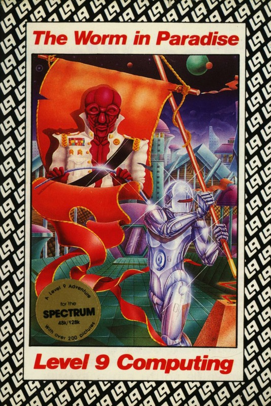
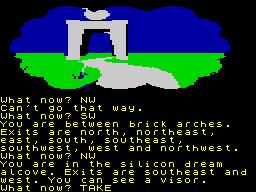

The Worm in Paradise


{kind=link}

| Publisher: | Level 9 |
| Price: | £9.95 |
| Year: | 1985 |
| Source: | CRASH, Issue 26 |

The Silicon Dream trilogy, begun by the text-only Snowball and followed up by Return to Eden, is now completed with The Worm in Paradise. Being the third part of a trilogy, this game is guaranteed a lot of sales but the game will make perfect sense without playing the other two, and it has enough worthy features to recommend it on its own.
The story takes place on the planet Eden, one hundred years after the time of Snowball and Return to Eden. You are a citizen of Enoch megapolis, the first and smallest of the domed cities which support Eden’s population of half a billion people. There is no contact between the human populations inside the domes and the world outside, so rumours of alien life forms on the planet are rife. It is said that flying saucers are regularly seen and that intelligent moles live in deep tunnels.

The game takes place during the reign of the third Kim, and Eden is run as a benevolent bureaucracy. This is the paradise of the title, where the silent majority live in the peace created by full employment, no crime, good housing, and more entertainment than is possible to enjoy in a lifetime. There is no way to challenge the system, but what right-thinking individual would want to?
The politics of Enoch are curious and take Reganomics to their logical conclusion. Governments can theoretically run at a profit, extorting no taxes from their citizens but getting income from such sources as fines for criminal offences. This involves tight controls on services and routine supervision of the populace to catch trouble-makers. Millions of robots, immune from corruption, work tirelessly to run the state as the Government wishes. Robots do all the important work and most of the menial jobs. It is difficult to tell whether humans are the leisured aristocrats, or the pets of robots.
The Enoch Police naturally enough turn in a profit. Fines rather than imprisonment, rewards to informants, summary justice to cut court costs, and fines on every small vice ensure a steady stream of money towards the long robot arm of the law. Enoch hospitals also make a profit, partly by the re-sale of body parts to ageing recipients and partly by charging for in-patient care. Making medical advice freely available via computer and minimising the time patients spend in hospital helps to turn costs into profits. In the larger scheme of things the people of Eden, originally intended as a source for future colonists, are left with no further role to play as the robots and machines mine every asteroid and hollow out every moon in their path, and build people on site.
The story behind this adventure is much better than the normal hotch potch which accompanies other games. The plot has real depth and relevance, a bit like the famous Star Trek TV scripts. As with Star Trek this game has a fair sprinkling of humour to sweeten what is quite a bitter task, that of changing an inhuman bureaucracy into a society where humans are worth something beyond just being robot fodder (that is, if I got the gist of the plot right from the amount of the adventure I completed).
You begin within a dream where you find yourself in a garden. Following the worm you feel pleased with yourself for getting somewhere whereupon you suddenly wake up! It becomes clear that you have been dreaming in a pleasuredome and, leaving your visor aside, you can begin the adventure proper — unless you were dreaming of a dream within a...
The Worm in Paradise evolved alongside a 12 month enhancement on Level 9’s very own adventure system. Standard features include a 1,000 word vocabulary, a very highly advanced English input, memory enhancing-text compression, the now familiar and very much appreciated type-ahead, and multi-tasking so a player need never wait while a picture is drawn. To be honest, the graphics take imaginative skills a bit too far and most of the pictures can only be described as poor. The story, descriptive depth, vocabulary, and the many sophisticated features go to make Level 9’s latest a really good adventure game.
COMMENTS
| Difficulty: | No push over |
| Graphics: | Imaginative, but poor |
| Presentation: | Good |
| Input facility: | Sophisticated |
| Response: | Fast |
| General rating: | Excellent |
| Atmosphere: | 9 |
| Vocabulary: | 9 |
| Logic: | 9 |
| Addictive quality: | 8 |
| Overall: | 9 |